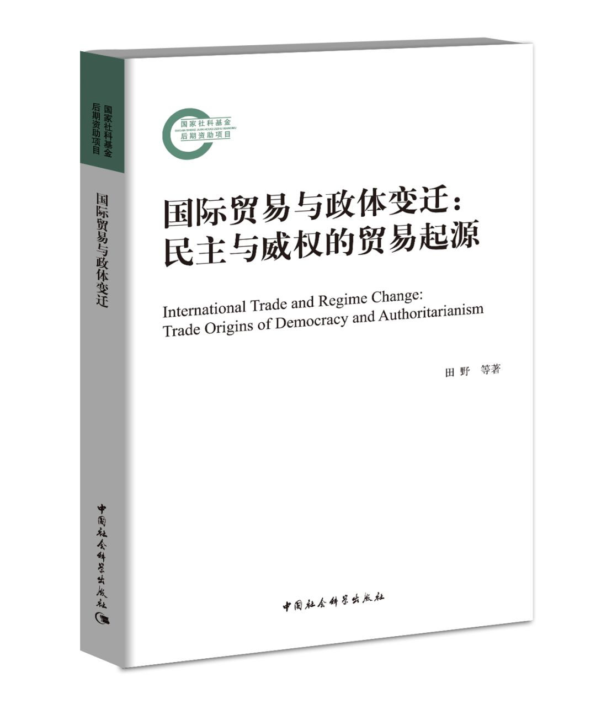

收录于合集
作者简介： 田野，中国人民大学国际关系学院教授，比较国际政治经济研究所所长，《世界政治研究》主编。主要研究领域为国际关系理论、国际政治经济学、国际制度与国际合作。曾在《经济研究》、《世界经济与政治》、International Political Science Review等期刊上发表论文多篇，已出版专著《国际关系中的制度选择：一种交易成本的视角》、《国家的选择—国际制度、国内政治与国家自主性》和《中国参与国际合作的制度设计：一种比较制度分析》。曾获全国优秀博士论文提名奖、第十一届霍英东青年教师基金、第十八届安子介国际贸易研究奖、北京市第十四届哲学社会科学优秀成果一等奖。

目录
第一章 导论
第二章 国际贸易与政体变迁：理论框架
第三章 不同要素禀赋下的国际贸易与政体变迁
第四章 不同初始威权类型下的国际贸易与政体变迁
第五章 劳动力要素充裕条件下的国际贸易与民主转型
第六章 自然资源要素充裕条件下的国际贸易与威权
巩固
第七章 国际贸易与政体变迁：计量检验
第八章 结论
本书研究总结
作为整个世界逐步在经济上结合成为一个整体的过程，经济全球化至少从资本主义生产方式产生之日就已经开始：“资产阶级，由于开拓了世界市场，使一切国家的生产和消费都成为世界性的了。”《马克思恩格斯选集》（第一卷），人民出版社1995年版，第275—276页。在马克思和恩格斯看来，世界市场的形成不仅会使各个国家之间的相互依赖不断加深，而且会使各国的国内政治经济发生前所未有的深刻变化。正如他们所指出的：“单是大工业建立了世界市场这一点，就把全球各国人民，尤其是各文明国家的人民，彼此紧紧地联系起来，以致每一国家的人民都受到另一国家发生的事情的影响。”同上书，第241页。作为经济全球化中最重要的一个维度，国际贸易也会深刻地影响到参与国的政治发展和制度变迁。正是在马克思、恩格斯以及深受马克思主义影响的巴林顿·摩尔的分析范式下，我们结合国际政治经济学、比较政治学以及国际经济学的相关理论建立了一个分析框架来说明国际贸易导致民主转型或者威权巩固这两种不同的国内政治结果各自需要的前提条件及其因果机制。
马克思和摩尔的阶级分析强调了阶级分化对政治制度选择的决定性作用。我们在此基础上将罗纳德·罗戈夫斯基关于国际贸易与政治分化的因果链条延伸到国际贸易对政体变迁的影响上。由于国际贸易的结果将有利于世界范围内要素价格的均等化，国际贸易对不同要素所有者的收入和财富产生不同的影响。随着贸易的开放，充裕要素的所有者将会运用他们增加了的收入和财富来更有效地克服集体行动的困境，从而积聚了更多的政治资源。由于是否转向民主取决于阶级之间的权力对比，国际贸易带来的上述变化将会直接影响威权政体的走向，即民主转型还是威权巩固。这样，当初始政体为威权政体时，在不同的要素禀赋下国际贸易会对落后经济体政体变迁产生不同的影响：当劳动力要素充裕时，国际贸易往往会促进民主转型；当自然资源要素充裕时，国际贸易往往会促进威权巩固。
同马克思和摩尔一样，我们的理论框架在强调阶级分化时也没有忽视政治制度的相对独立性。作为政治博弈的基本规则，政治制度决定了政治行为体战略选择的范围以及相互作用的结果。随着国际贸易所带来的经济发展和人均收入的增长，威权政体会面对不断扩大的政治参与需求。作为威权国家两种不同的政体模式，军人政权和一党制政权在使用强制和合作两种战略工具来化解反对势力的能力上存在着显著的差异，从而限制了有关政治行为体的战略选择。正是由于在不同的政治制度下战略选择集合的差异，当初始威权类型为军人政权时国际贸易更容易推动民主转型，而初始威权类型为一党制政权时国际贸易难以推动民主转型，威权政体容易巩固。
为了检验上述理论，我们主要采用比较研究中的求异法或求同法考察了四对案例：19世纪末的巴西和20世纪70年代的巴西、韩国和新加坡、土耳其和泰国、委内瑞拉和哈萨克斯坦。在巴西两个历史时期的比较案例研究中，我们通过求异法来揭示要素禀赋作为条件变量如何制约国际贸易对政体变迁的影响。19世纪末，巴西劳动力要素稀缺，土地要素充裕。这一时期巴西对国际贸易的参与使土地收益提高，收入和财富集中于地主阶层特别是咖啡种植园主。凭借经济上的优势地位，这些土地要素所有者通过操纵选举、镇压农民起义等方式加强了对政权的控制。因此，国际贸易在19世纪末巩固了巴西的威权统治。在20世纪70年代，巴西土地—劳动力比明显降低，劳动力要素变得充裕起来。这一时期巴西对国际贸易的参与会提高劳动的收益率，增强了工人阶级的力量。通过组建工会、发动罢工和争取直接选举等，巴西工人阶级极大地推动了民主化进程。因此，国际贸易在20世纪70年代促进了巴西的威权政体向民主转型。
在韩国和新加坡的比较案例研究中，我们通过求异法来揭示初始威权类型作为条件变量如何制约国际贸易对政体变迁的影响。在20世纪60、70年代，韩国和新加坡均采取了出口导向型战略，工人阶级都随着国际贸易的扩张而力量增强。但在政治上，尽管两国均采取了威权政体，但是属于不同类型的威权政体，即前者为军人政权，而后者为一党制政权。这种初始威权类型上的差异使两国政府在面对劳工运动的发展时采用了不同的战略组合。韩国的军人政权一方面在面对劳工的抗争时倾向于实施刚性的强制手段，另一方面基于军人统治集团的封闭性而难以和反对派合作。新加坡的一党制政权一方面在矛盾激化之前善于运用柔性的强制手段，另一方面通过实施包容战略来满足劳工的参政需求。这样，韩国的威权政体在遭遇危机时更容易崩溃，而新加坡的威权政体则更容易保持稳定。
在土耳其和泰国的比较案例研究中，我们通过求同法来揭示在劳动力要素充裕条件下国际贸易促进民主转型的因果关系。土耳其和泰国都是劳动力要素充裕而土地要素稀缺的落后经济体。20世纪80年代以来，随着对外贸易的发展，两国劳动力要素所有者的收入与财富不断增长，中下阶层在政治上的影响力逐渐提升。在政治结社层面，两国中下阶层开始创建和参加各式各样的非政府组织，以组织形式来维护自身的经济利益并扩大自身的政治影响。在社会运动层面，中下阶层民众以较为激进的方式对抗传统政治精英居于主导地位的政府。在土耳其，世俗主义政治精英对中下阶层的伊斯兰政治诉求的压制催生了伊斯兰复兴运动的产生和发展。在泰国，王室、军方和官僚集团等传统精英对农民阶层及其盟友新兴产业集团的压制催生了红衫军运动。在政治选举层面，代表中下阶层利益的政党在选举中频频获胜并上台执政。在土耳其，代表安纳托利亚农民、城市边缘阶层、中小工商业者等中下阶层利益的正义与发展党在2002年以来的选举中连续取胜。在泰国，代表北部、东北部农民和城市贫民利益的泰爱泰党及其继任政党在进入21世纪的四次大选中都赢得了胜利。
在委内瑞拉和哈萨克斯坦的比较案例研究中，我们通过求同法来揭示在自然资源要素充裕条件下国际贸易促进威权巩固的因果关系。在20世纪末、21世纪初国际石油贸易蓬勃发展的时期，作为石油资源丰富并以石油出口为支柱的国家，委内瑞拉和哈萨克斯坦国内不同群体间的政治力量对比发生了变化。石油这一相对充裕要素的所有者在收入和财富上的增加使得他们具有更多资源进行政治动员，帮助其所支持的当权者巩固其威权统治。在委内瑞拉，从石油收入中获益的贫民建立了公社委员会、玻利瓦尔小组和选战小组等非政府组织以支持查韦斯政权，并发起了包括社会广播等社会运动在内的“查韦斯支持者运动”，他们在政治选举中参与率的提高帮助查韦斯政权在5次全民公决、3次总统选举中获胜。在哈萨克斯坦，凭借石油要素所有者在政治结社中起到的动员作用、在社会运动中的非制度性参与以及在政治选举中的鼎力支持，纳扎尔巴耶夫带领的“祖国之光”党成功统治哈萨克斯坦已长达20多年的时间。
上述四对案例研究或者说八个案例研究在空间和时间上的分布具有相当的广泛性。一方面，案例研究中所涉及的国家在地区分布上相当广泛，包括三个东亚国家（韩国、新加坡、泰国）、两个拉美国家（巴西、委内瑞拉）、一个中东国家（土耳其）和一个中亚国家（哈萨克斯坦）。另一方面，这些案例研究在时间跨度上从19世纪末到21世纪初，包括19世纪末的巴西，20世纪70—80年代的巴西、韩国和新加坡，20世纪80年代以来的土耳其和泰国，20世纪末21世纪初的委内瑞拉和哈萨克斯坦。鉴于这些案例在历史背景、文化传统、经济发展水平、政治制度和国际环境上的显著差异，案例研究对我们的理论的支持说明我们的理论具有较强的解释力。
不过相对于小样本的案例研究而言，大样本的计量分析对于展示理论的一般性仍更有价值。我们在计量分析中采用面板数据logit模型来估计因变量——民主转型或政体崩溃——发生的概率。首先考虑要素禀赋的调节效应。在未加入交互项的情形下，衡量国际贸易参与的变量——贸易量、对外贸易依存度、出口依存度与民主转型的关系均未显著。在加入国际贸易的相关变量与相对劳动力要素禀赋的交互项之后，国际贸易对劳动力要素禀赋不同的国家的民主转型产生了异质性的影响：对劳动力要素相对充裕的国家而言，参与国际贸易会增加其发生民主转型的概率；对劳动力要素相对稀缺的国家而言，参与国际贸易与其发生民主转型的关系并不显著。在加入国际贸易的相关变量与自然资源禀赋的交互项之后，国际贸易对自然资源禀赋不同的国家的政体崩溃产生了影响。对于自然资源要素相对充裕的国家而言，参与国际贸易会降低其政权崩溃的概率。
然后我们在计量模型中考虑初始威权类型的调节效应。在未加入交互项的情形下，计量结果显示，一国参与国际贸易并不会对民主转型产生显著影响，并且军人政体与民主转型的相关性也是不确定的。但当我们纳入国际贸易变量和军人政体的交互项时，军人政体与民主转型的关系呈现出更大的一致性。当没有纳入交互项时，计量结果显示贸易量、贸易开放度、出口依存度均与威权崩溃呈正相关关系，且具有显著性。但当我们纳入一党制与国际贸易的相关变量的交互项后，我们发现一党制国家更多地参与国际贸易会减少威权崩溃的可能性。
内容简介
不同的国家同样积极参与国际贸易，却收获了不同的国内政治结果。一些国家发生了民主转型，另一些国家则实现了威权巩固。在一国的政体变迁中，国际贸易到底发挥了什么作用？本书对19世纪末和20世纪70年代的巴西、韩国和新加坡、土耳其和泰国、委内瑞拉和哈萨克斯坦等多对案例进行了比较分析，并且基于1945年至2010年的数据进行了计量分析。本书发现，在不同的要素禀赋下，国际贸易会对落后经济体的政体变迁产生不同的影响：当劳动力要素充裕时，国际贸易会促进民主转型；当自然资源要素充裕时，国际贸易会促进威权巩固。本书还发现，当初始威权类型不同时，国际贸易对政体变迁也会产生异质性的影响。
划重点：赠书
9月10日23:59之前 留言您对田野老师、中国社会科学出版社、政文观止Poliview或者政治学（包括国际/比较政治经济学）的喜爱或者建议 （不少于100字） ，我们将本着 公平公正 的原则抽出五位幸运读者寄送赠书 （限中国大陆包邮地区） 。我们特别希望被抽中的幸运读者能在读完这本书后写下书评发给我们，便于我们日后汇总发布。
没有抽中的读者朋友也请勿担心，本书在京东、中国社会科学出版社微店均有售。
今年下半年 政文观止Poliview还将继续举办赠书活动，欢迎继续关注、支持我们。
编辑：吴温泉